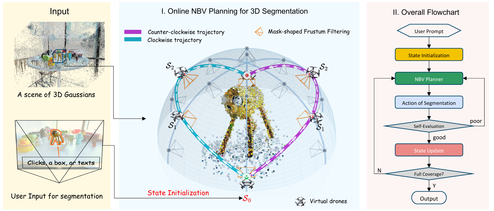
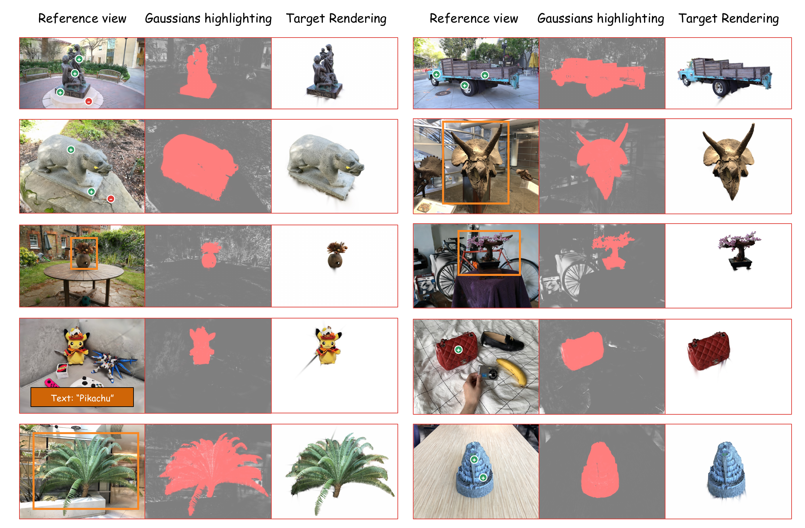
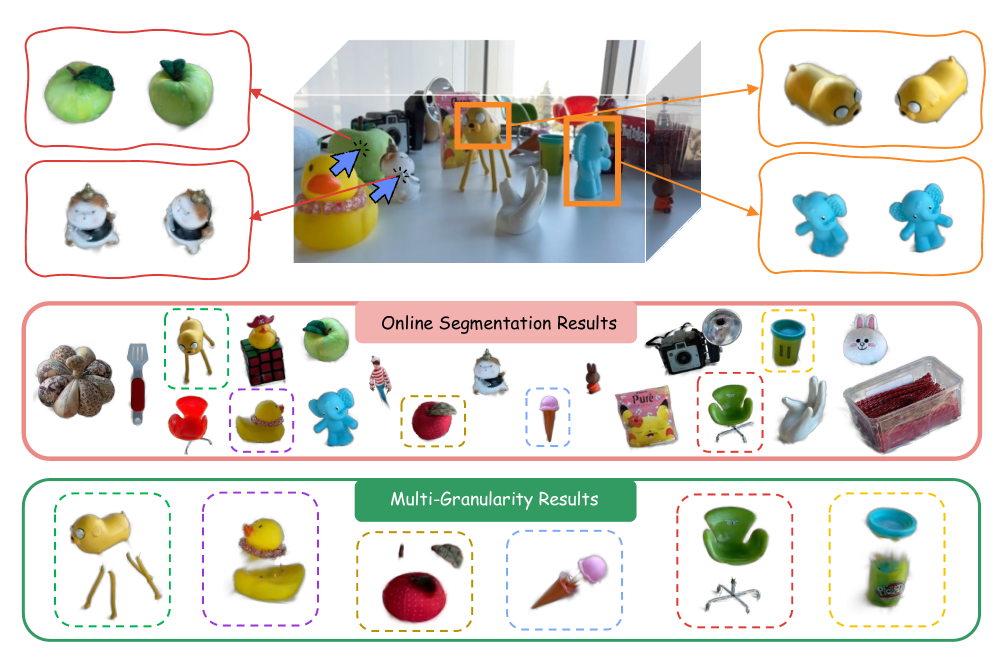
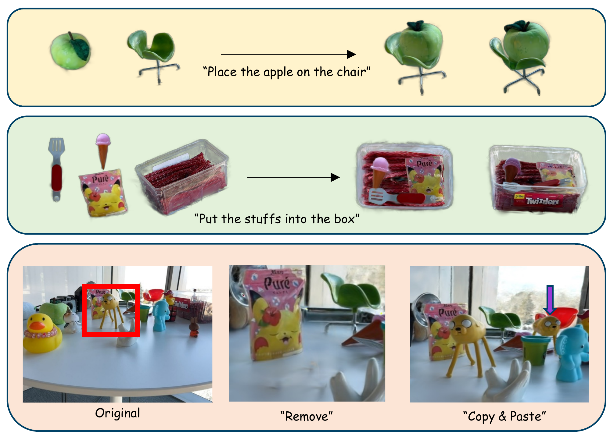

Abstract
Interactive segmentation of 3D Gaussians offers a compelling opportunity for real-time manipulation of 3D scenes, thanks to the real-time rendering capability of 3D Gaussian Splatting (3DGS). However, existing methods require a time-consuming per-scene setup—typically tens of seconds or even minutes—before interactive segmentation can begin on a raw 3DGS scene. This setup involves multi-view mask preparation, mask lifting, and feature distillation, creating a major bottleneck for online applications.
To address this limitation, we aim to completely eliminate the setup stage for interactive 3DGS segmentation while keeping the segmentation time practical (under 1 second). In this work, we present SAGO (Segment Any Gaussians Online), a novel setup-free framework for interactive 3DGS segmentation. By introducing virtual drones, our method reframes the 3D segmentation problem as an online Next-Best-View (NBV) planning task formulated within a Markov process. Extensive experiments demonstrate that SAGO can extract clean 3D assets directly from 3D Gaussians with sub-second latency, thereby enabling a broad range of downstream applications such as object manipulation and scene editing. Moreover, our method achieves over a 50× speedup compared to the previous setup-free 3DGS segmentation frameworks.
Video
See SAGO in action: interactive segmentation and 3D asset manipulation.
Method Overview
3D segmentation as online next-best-view planning.

1 Prompt & initialize
A user prompt identifies the target in a rendered view of a pretrained 3D Gaussian scene.
2 Explore virtual views
Virtual drones plan informative viewpoints online; these are cameras in the scene, not physical drones.
3 Filter & update
New masks filter background Gaussians and update the state, progressively isolating the target object.
Segmentation Results
Accurate object extraction without a per-scene segmentation setup stage.
Generalization across scenes
{kind=link}

Multi-granularity segmentation
{kind=link}

Accuracy and efficiency
Selected baselines on SPIn-NeRF and NVOS. Accuracy values are percentages; setup and segmentation times are reported in the paper.
| Method | SPIn-NeRF | NVOS | Setup time | Seg. time | ||
|---|---|---|---|---|---|---|
| mIoU ↑ | mAcc ↑ | mIoU ↑ | mAcc ↑ | |||
| SA3D | 91.9 | 98.8 | 90.3 | 98.2 | 2–5 min | 15–30 s |
| SAGA | 93.4 | 99.2 | 92.6 | 98.6 | ~1 h | 10 ms |
| FlashSplat | — | — | 91.8 | 98.6 | 30–60 s | 1–2 s |
| iSegMan | 92.4 | 99.1 | 92.0 | 98.4 | 50–90 s | 4–6 s |
| GaussianCut | 92.9 | 99.2 | 92.5 | 98.4 | None | 40–60 s |
| SAGO (ours) | 92.5 | 99.3 | 92.7 | 98.7 | None | 0.4–0.9 s |
Our experiments use an NVIDIA RTX 4090. “No setup” refers to segmentation-specific preparation; the input 3DGS scene is already reconstructed. See the paper for protocols and full comparisons.
Scene Editing
Turn segmented Gaussians into reusable 3D assets.

BibTeX
@inproceedings{liao2026sago,
title = {Online Segment 3D Gaussians via Launching Virtual Drones},
author = {Liao, Liwei and Wang, Rongjie and Wang, Ronggang},
booktitle = {European Conference on Computer Vision (ECCV)},
year = {2026},
url = {https://sago-eccv.github.io/}
}